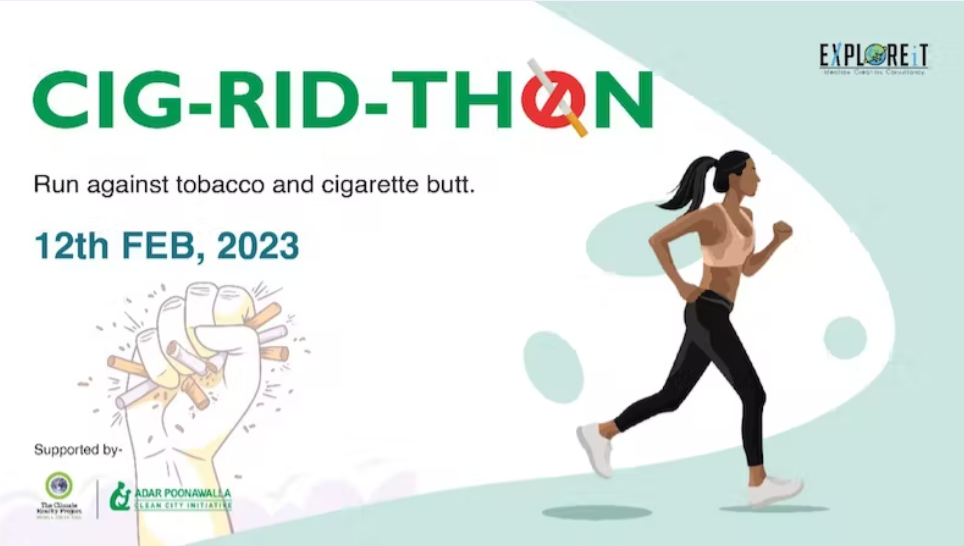
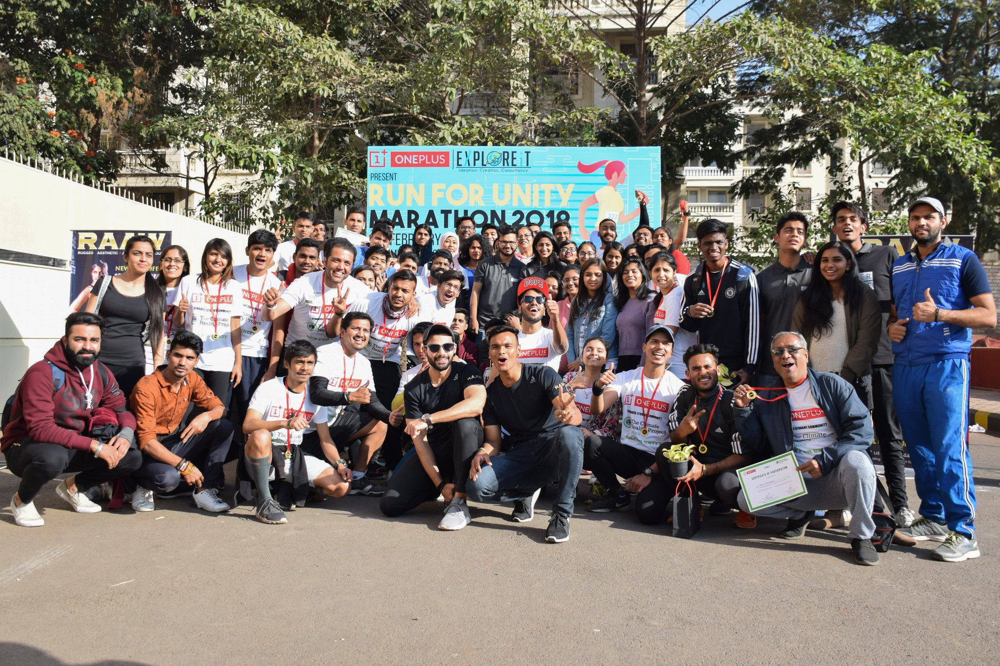

Cigarette Butt Drive Marathon
Cigarette butts are the most littered item in the world, with billions discarded every day. These toxic waste items pose a major threat to the environment and human health. Join us for the annual Cig-Rid-Thon and help clean up the streets!
Harmful Effects of Cigarette Butts
Cigarette butts are not biodegradable and take decades to break down. They contain toxic chemicals that can harm wildlife and pollute water sources. Additionally, they are made of a type of plastic called cellulose acetate, which can release microplastics into the environment.
In recent years, studies have found that microplastics from cigarette butts have been found in human body fluids, such as blood and breast milk, raising concerns about the impact of these toxic waste items on human health.
About Cig-Rid-Thon
We aim in mobilizing the society to participate in activities that will be socially and environmentally beneficial, which will help mold them into socially responsible citizens. In partnership with the Climate Reality Project India and Adar Poonawalla Clean City, we are organising a run on movement against tobacco and cigarette butts.
Theme- “Movement against tobacco & cigarette butts”
- 3km – Fun Run (6:45am)
- 6km – Green Run (7:00am)
- 12km – Dream Run (7:15am)
Race categories:
- Push-up Challenge :- Trophy + Certificate
- Plank Challenge:- Trophy + Certificate
Challenges-
- Dry-fit T-Shirts
- Metal Sippers
- BIBS
- Finisher’s Medal
- Energy Drink
- Breakfast and refreshments
- Badges
- Certificates
- Plant Sapling
- Zumba Session
- Physio Consultation
- Medical Support
- Hydration Support
Deliverables-
This event is supported by Climate Reality Project and Adar Poonawalla Clean City Initiative